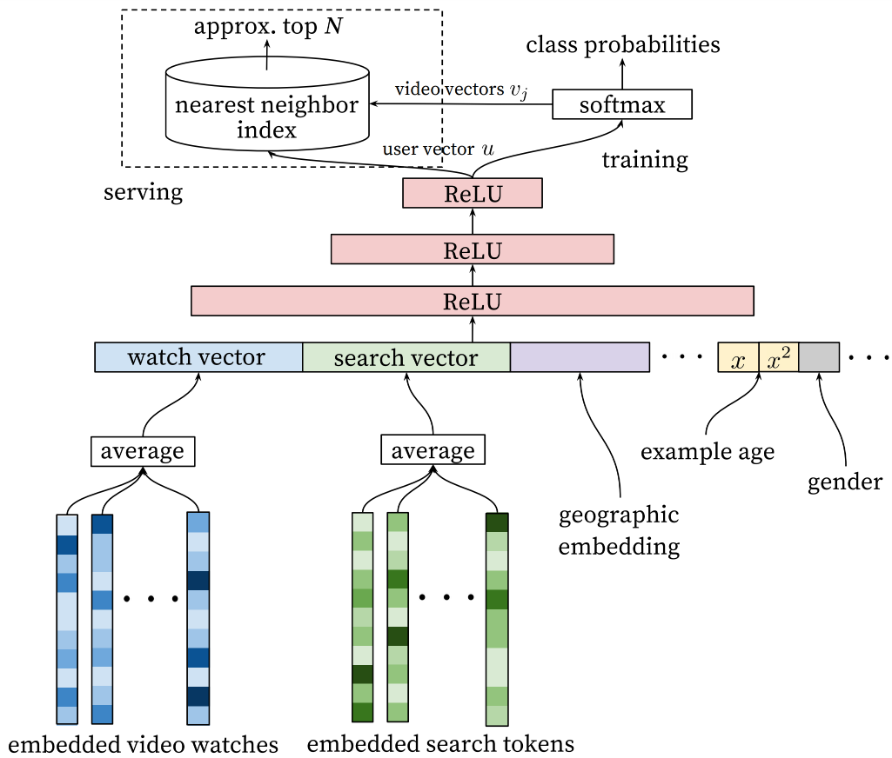
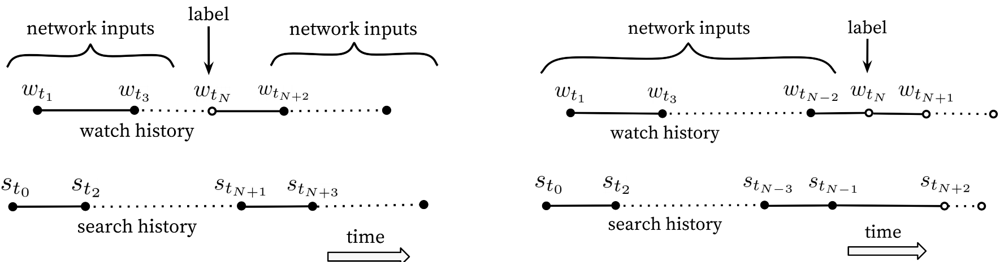

2.3.3. YouTubeDNN：从匹配到预测用户下一行为¶
YouTube深度神经网络推荐系统 (Covington et al., 2016) 代表了双塔模型演进的一个重要里程碑。YouTubeDNN在架构上延续了双塔设计，但引入了一个关键的思想转变：将召回任务重新定义为”预测用户下一个会观看的视频”。
{kind=link}

图2.3.2 YouTubeDNN候选生成模型架构¶
YouTubeDNN采用了”非对称”的双塔架构：用户塔集成了观看历史、搜索历史、人口统计学特征等多模态信息，用户观看的视频ID通过嵌入层映射后进行平均池化聚合，模型还引入了”Example Age”特征来建模内容新鲜度的影响；物品塔则相对简化，本质上是一个巨大的嵌入矩阵，每个视频对应一个可学习的向量，避免了复杂的物品特征工程。
这种”预测下一个观看视频”的任务设定，本质上类似于NLP中的next token预测，可以自然地建模为一个极端多分类问题：
这里\(w_t\)表示用户在时间\(t\)观看的视频，\(U\)是用户特征，\(C\)是上下文信息，\(V\)是整个视频库。由于视频库规模庞大，直接计算全量Softmax不可行，因此采用Sampled Softmax进行高效训练。
2.3.3.1. 关键的工程技巧¶
YouTubeDNN的成功不仅来自于模型设计，更来自于一系列精心设计的工程技巧。
非对称的时序分割：传统协同过滤通常随机保留验证项目，但这种做法存在未来信息泄露问题。视频消费具有明显的不对称模式——剧集通常按顺序观看，用户往往从热门内容开始逐步深入小众领域。因此，YouTubeDNN采用时序分割策略：对于作为预测目标的用户观看记录，只使用该目标之前的历史行为作为输入特征。这种”回滚”机制更符合真实的推荐场景。
{kind=link}

图2.3.3 非对称共同观看模式¶
负采样策略：为了高效处理数百万类别的Softmax，模型采用重要性采样技术，每次只对数千个负样本进行计算，将训练速度提升了100多倍。
用户样本均衡：为每个用户生成固定数量的训练样本，避免高活跃用户主导模型学习。这个看似简单的技巧，对提升长尾用户的推荐效果至关重要。
YouTubeDNN的成功在于建立了一套可扩展、可工程化的推荐系统范式——训练时使用复杂的多分类目标和丰富的用户特征，服务时通过预计算物品向量和实时计算用户向量，配合高效的ANN检索完成召回。这种设计实现了训练复杂度和服务效率的有效平衡，至今仍被广泛借鉴。
2.3.3.2. 代码实践¶
YouTubeDNN的用户塔设计体现了”非对称”的思想，它整合了多种用户特征和历史行为序列：
# 整合用户特征和历史行为序列
user_feature_embedding = concat_group_embedding(
group_embedding_feature_dict, "user_dnn"
) # B x (D * N)
if "raw_hist_seq" in group_embedding_feature_dict:
hist_seq_embedding = concat_group_embedding(
group_embedding_feature_dict, "raw_hist_seq"
) # B x D
user_dnn_inputs = tf.concat(
[user_feature_embedding, hist_seq_embedding], axis=1
) # B x (D * N + D)
else:
user_dnn_inputs = user_feature_embedding
# 构建用户塔：输出归一化的用户向量
user_dnn_output = DNNs(
units=dnn_units + [emb_dim], activation="relu", use_bn=False
)(user_dnn_inputs)
user_dnn_output = L2NormalizeLayer(axis=-1)(user_dnn_output)
物品塔则采用简化设计，直接使用物品Embedding表：
# 物品Embedding表（从特征列配置中获取）
item_embedding_table = embedding_table_dict[label_name]
# 为评估构建物品模型
output_item_embedding = SqueezeLayer(axis=1)(
item_embedding_table(input_layer_dict[label_name])
)
output_item_embedding = L2NormalizeLayer(axis=-1)(output_item_embedding)
训练时采用Sampled Softmax优化，将百万级的多分类问题转化为高效的采样学习：
# 构建采样softmax层
sampled_softmax_layer = SampledSoftmaxLayer(item_vocab_size, neg_sample, emb_dim)
output = sampled_softmax_layer([
item_embedding_table.embeddings,
user_dnn_output,
input_layer_dict[label_name]
])
这种设计的核心优势在于：用户塔可以根据业务需求灵活扩展特征和模型复杂度，而物品塔保持简洁高效，易于离线预计算和实时检索。
下面训练YouTubeDNN并评估召回效果。
from funrec import run_experiment
run_experiment('youtubednn')
+---------------+--------------+-----------+----------+----------------+---------------+
| hit_rate@10 | hit_rate@5 | ndcg@10 | ndcg@5 | precision@10 | precision@5 |
+===============+==============+===========+==========+================+===============+
| 0.0303 | 0.0167 | 0.0139 | 0.0096 | 0.003 | 0.0033 |
+---------------+--------------+-----------+----------+----------------+---------------+